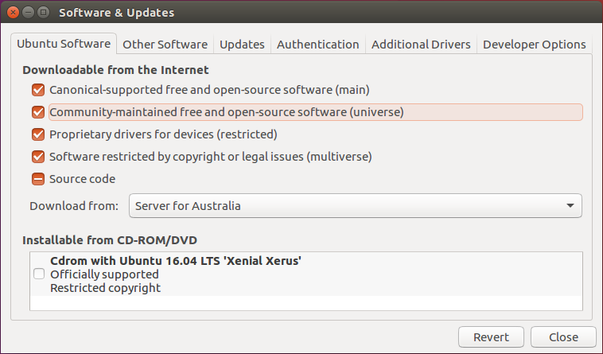
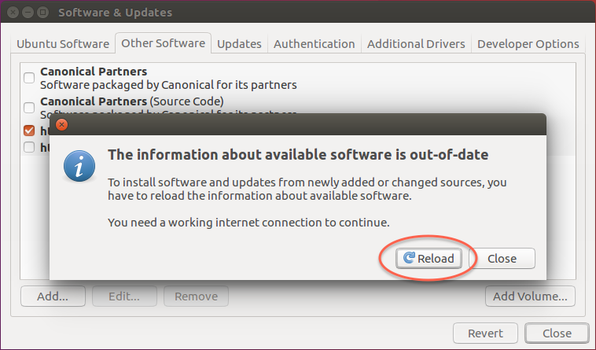
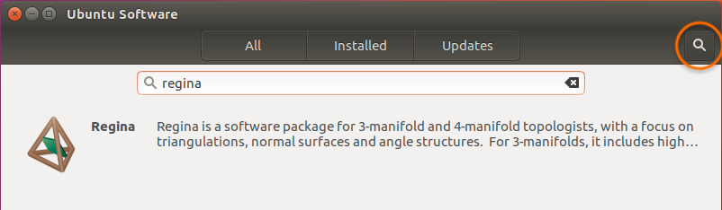
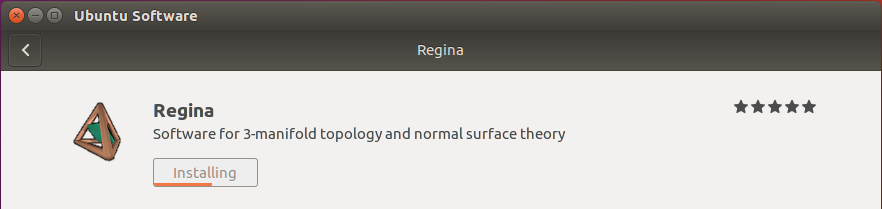

Ubuntu 17.04 (Zesty Zapus) already comes with Regina 5.1.
Since Ubuntu 17.04 has now passed its end-of-life, newer versions of Regina will not be packaged for it. It is highly recommended that you upgrade to a newer version of Ubuntu.
If you wish to install Regina 5.1 on Ubuntu 17.04:
Open the Ubuntu Software application and select Software & Updates from the main menu. Under Ubuntu Software, make sure that you have enabled the community-maintained free and open-source software (universe).

Now close the Software & Updates box. Ubuntu should offer to reload the information about available software. Press Reload, so that Ubuntu can see the new packages for Regina.

Search for Regina in the Ubuntu Software Centre.

Press Install and you are finished!

The procedure above only installs the main packages regina-normal and regina-normal-doc, which is all that most people will need.
If you are a C++ programmer and you wish to build Regina into your own projects, you should also install the package regina-normal-dev.
If you want the MPI-enabled utilities for use on high-performance clusters, you should install the package regina-normal-mpi.